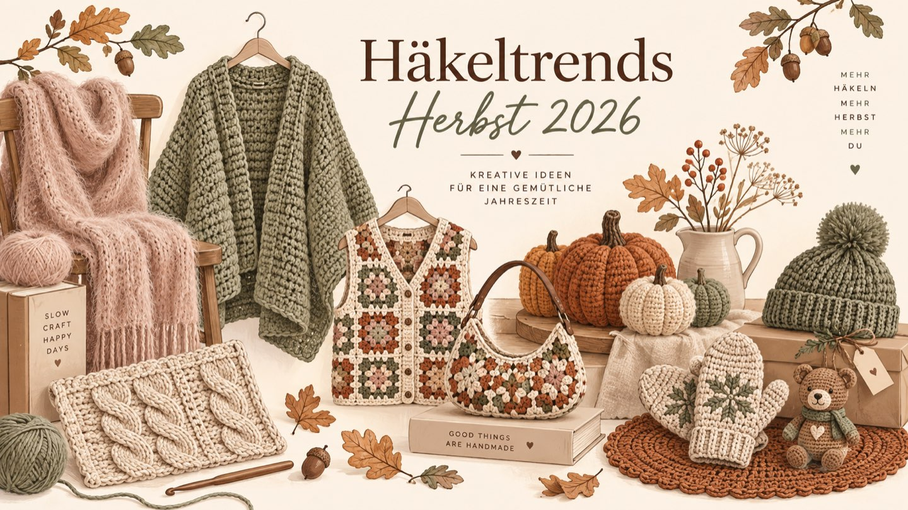
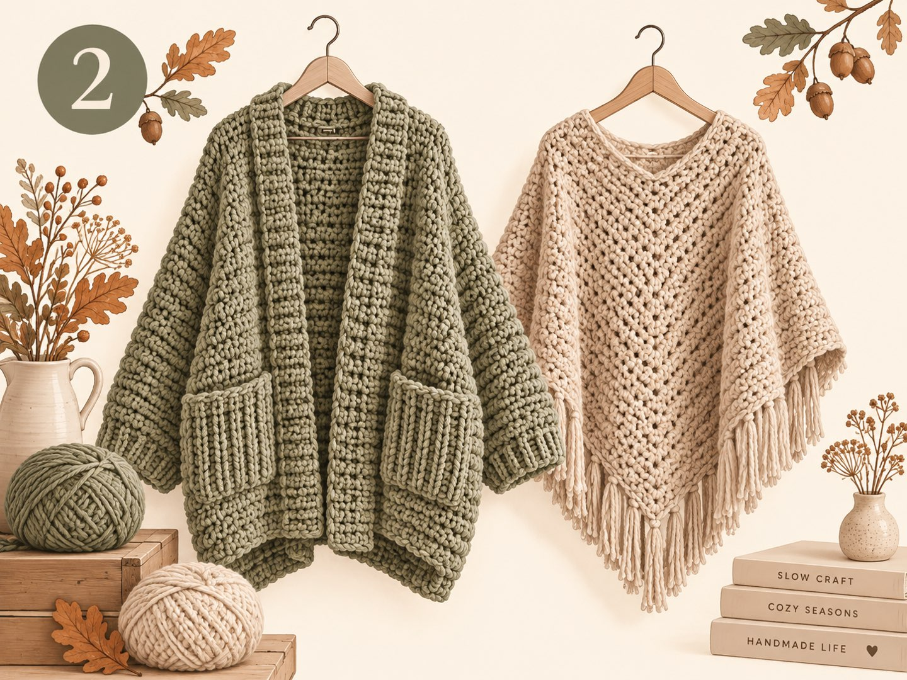
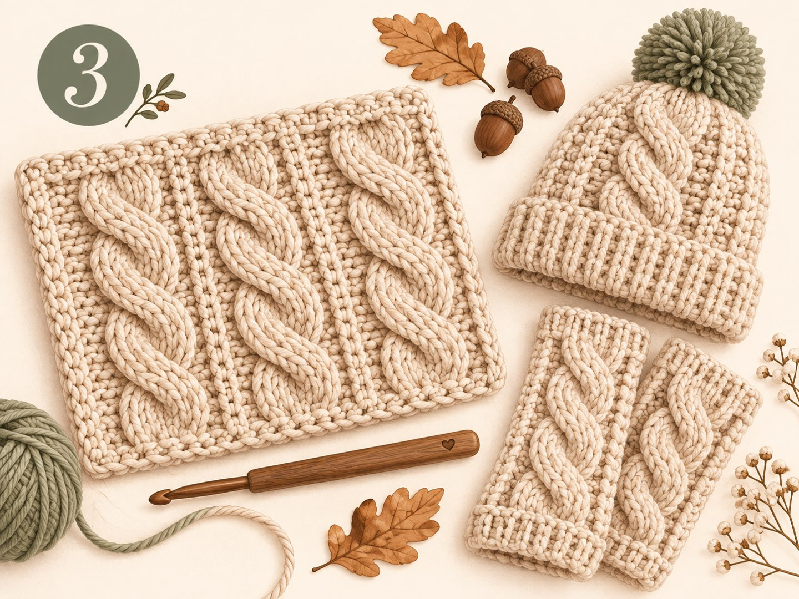

Häkeltrends Herbst 2026: Die 6 wichtigsten Trends für die gemütliche Saison

Kurz gesagt: Das sind die Häkeltrends im Herbst 2026
Im Herbst 2026 wird gehäkelt, was warm, weich und langlebig ist. Die sechs wichtigsten Trends:
- Mohair und flauschige Garne – wolkiger Look, verzeiht kleine Fehler
- Oversize-Cardigans und Ponchos – lässig geschnitten, zum Übereinanderziehen
- Flache, moderne Zopfmuster – grafisch statt klobig
- Granny Squares als Mode – Westen, Jacken und Taschen aus Quadraten
- 3D-Maschen für Herbstdeko – allen voran der gehäkelte Kürbis
- Weihnachtsgeschenke früh häkeln – Platzsets, Mützen, Stulpen, Amigurumi
Farben: erdige Neutraltöne (Creme, Beige, Braun) mit gezielten Akzenten wie gedämpftem Petrol oder Salbeigrün.
Die Tage werden kürzer, der Tee wird wieder heißer – und für mich beginnt jetzt die schönste Häkelzeit des Jahres. Nach einem Sommer voller luftiger Tops und Netztaschen darf es endlich wieder warm und ein bisschen flauschig werden. Ich habe mir angeschaut, was Designerinnen, Garnhersteller und die Häkel-Community auf TikTok, Instagram und Pinterest gerade bewegt. Hier sind meine sechs Lieblingstrends – jeweils mit Projektidee, Garntipp und Schwierigkeitsgrad.
1. Warum ist Mohair im Herbst 2026 so beliebt?

Mohair und andere flauschige Garne sorgen für einen weichen, wolkigen Look, der selbst einfache Maschen edel wirken lässt. Kleine Unregelmäßigkeiten verschwinden im Flaum – ideal, wenn deine Maschen noch nicht ganz gleichmäßig sind.
- Projektidee
- Leichter Pullunder, Schal oder Mütze
- Garntipp
- Mohair doppelt mit einem glatten Merino- oder Baumwollgarn verhäkeln
- Niveau
- Anfängerin bis Fortgeschrittene
Tipp: Mohair lässt sich schlecht aufribbeln. Häkle vorher eine Maschenprobe, bevor du ins große Projekt startest.
2. Oversize-Cardigans und Ponchos: Wie häkelt man sie, ohne dass sie zu schwer werden?

Große, gemütliche Jacken zum Reinkuscheln sind der Herbstklassiker – diese Saison mit tief angesetzten Schultern und bewusst lässigem Schnitt. Dazu passen gehäkelte Ponchos und Balaclava-Sets aus Mütze und Schal.
- Projektidee
- Boxy Cardigan aus Rechtecken, Poncho, Balaclava
- Garntipp
- Mittelstarkes Merino-Mischgarn statt extra dickem Garn – sonst wird das Teil schwer und steif
- Niveau
- Fortgeschrittene Anfängerin
3. Kann man Zopfmuster häkeln? Ja – und flach sind sie gerade Trend

Zöpfe kennt man vom Stricken, beim Häkeln entstehen sie mit Reliefstäbchen. Neu ist die flachere, grafische Variante: Sie wirkt modern und trägt weniger auf als klassische Aran-Zöpfe.
- Projektidee
- Mütze, Pulswärmer, Sofadecke
- Technik
- Reliefstäbchen von vorne und hinten, überkreuzt
- Niveau
- Fortgeschritten
4. Granny Squares als Mode: Was kann man daraus häkeln?

Das Granny Square ist endgültig in der Mode angekommen. Aus einzelnen Quadraten entstehen Westen, Jacken, Röcke und Taschen. Für den Herbst wirken sie besonders schön in warmen Erdtönen mit einem mutigen Farbakzent.
- Projektidee
- Granny-Square-Weste oder Halbmond-Tasche
- Du brauchst
- Magic Ring, Luftmaschen und Stäbchen – mehr nicht
- Niveau
- Anfängerin
5. 3D-Maschen: Warum häkeln gerade alle Kürbisse?

Auf TikTok und Instagram sieht man diesen Herbst überall gehäkelte Kürbisse mit plastischen Rippen. Die 3D-Struktur entsteht durch Reliefmaschen oder durch Abbinden mit Garn. Kleine Deko-Projekte wie diese sind in einem Abend fertig.
- Projektidee
- Kürbisse in drei Größen, Herbstblätter, Eicheln
- Garntipp
- Baumwolle für klare Konturen, Chenille für einen samtigen Look
- Niveau
- Anfängerin
6. Wann mit gehäkelten Weihnachtsgeschenken anfangen?

Jetzt! Viele in der Community starten schon im September mit handgemachten Geschenken. Wer ab jetzt etwa ein kleines Projekt pro Woche häkelt, hat im Dezember entspannt mehrere Geschenke fertig.
- Projektideen
- Platzsets, Mützen, Stulpen, kleine Amigurumi, Topflappen
- Niveau
- Alle Niveaus
Alle Häkeltrends Herbst 2026 im Überblick
| Trend | Typisches Projekt | Niveau | Zeitaufwand |
|---|---|---|---|
| Mohair & Flausch | Pullunder, Schal | Anfängerin+ | mittel |
| Oversize-Cardigan / Poncho | Boxy Cardigan | Fortg. Anfängerin | hoch |
| Flache Zöpfe | Mütze, Decke | Fortgeschritten | mittel–hoch |
| Granny Squares | Weste, Tasche | Anfängerin | mittel |
| 3D-Maschen | Kürbis-Deko | Anfängerin | gering |
| Weihnachtsgeschenke | Platzsets, Amigurumi | alle | gering pro Stück |
Welche Farben sind beim Häkeln im Herbst 2026 angesagt?
Die Basis bilden erdige Neutraltöne wie Creme, Beige und Braun. Dazu kommen gezielte Akzente: ein gedämpftes Petrol, Salbeigrün oder ein einzelner kräftiger Farbtupfer. Ton-in-Ton wirkt edel und ruhig, ein Kontrast macht das Teil lebendig.
Fazit: Gemütlich, texturreich, nachhaltig
Der Häkel-Herbst 2026 steht für Lieblingsteile, die bleiben. Statt schnell gekaufter Mode häkeln wir Stücke mit Struktur und Charakter – und nutzen dabei gern auch Restgarne aus dem Vorrat.
Und du? Welcher Trend landet als Nächstes auf deinem Haken? Schreib es mir in die Kommentare oder zeig mir dein Projekt auf Instagram! 🧶
Häufige Fragen zu den Häkeltrends im Herbst 2026
Was sind die Häkeltrends im Herbst 2026?
Die wichtigsten Häkeltrends im Herbst 2026 sind flauschige Garne wie Mohair, Oversize-Cardigans und Ponchos, flache, moderne Zopfmuster, Granny Squares als Modeteile (Westen, Jacken, Taschen), 3D-Maschen für Herbstdeko wie Kürbisse und das frühe Häkeln von Weihnachtsgeschenken.
Welche Farben sind beim Häkeln im Herbst 2026 angesagt?
Erdige Neutraltöne wie Creme, Beige und Braun bilden die Basis. Dazu kommen gezielte Akzente, zum Beispiel ein gedämpftes Petrol, Salbeigrün oder ein kräftiger Farbtupfer. Ton-in-Ton wirkt edel, ein einzelner Akzent macht das Teil lebendig.
Welcher Häkeltrend eignet sich für Anfängerinnen und Anfänger?
Granny Squares und kleine 3D-Deko wie Häkel-Kürbisse sind ideal für den Einstieg. Für Granny Squares reichen Magic Ring, Luftmaschen und Stäbchen. Die Teile sind klein, schnell fertig und lassen sich später zu Westen, Taschen oder Decken zusammensetzen.
Welches Garn eignet sich für Herbst-Häkelprojekte?
Für Cardigans und Ponchos eignen sich weiche Merino-Mischgarne oder Mohair, das zusammen mit einem glatten Garn verhäkelt wird. Für Deko wie Kürbisse funktioniert Baumwolle gut, für Kissen und Amigurumi sind Chenille- und Plüschgarne beliebt. Bei Oversize-Teilen lieber mittelstarkes Garn wählen, damit das Teil fällt und nicht zu schwer wird.
Wann sollte man mit gehäkelten Weihnachtsgeschenken anfangen?
Am besten im September oder Oktober. Wer ab jetzt etwa ein kleines Projekt pro Woche häkelt – zum Beispiel Platzsets, Mützen, Stulpen oder Amigurumi – hat bis Dezember entspannt mehrere Geschenke fertig.